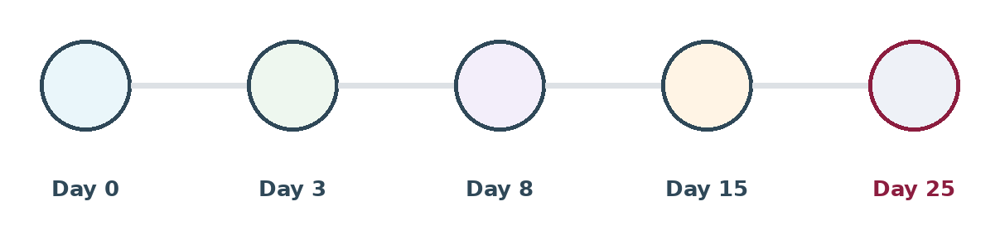

One message is not outreach. Most replies come after the first message, and most sequences fail because every message after the first says "just following up".
{kind=link}

The rule the whole sequence depends on
Every message must add something the last one did not.
A follow-up with no new information is a request for attention offering nothing in return. People are right to ignore it.
The five messages
| # | Day | Its job | What it adds |
|---|---|---|---|
| 1 | 0 | Show relevance, ask something small | Why them, what the job is, one question |
| 2 | 3 | The detail you held back | Scope, team, salary range, or the problem being solved |
| 3 | 8 | A different angle or channel | Something next to their interests, or a different sender |
| 4 | 15 | Short nudge | Two lines. A deadline only if one genuinely exists |
| 5 | 25 | Close it off | You are stopping, the door is open, may you contact them later |
Those days are a starting point. Compress it for a job closing in three weeks. Stretch it for a senior search where nobody is in a hurry.
What each message is for
Message 1 is judged on relevance alone. Keep it short and ask a question rather than requesting a call. Replying has to be cheap.
Message 2 does the most work in most sequences. Deliberately hold one genuinely useful fact back from message 1 so message 2 has a reason to exist. The salary range is the strongest candidate if you did not lead with it.
Message 3 changes something structural — the channel, the framing, or who sends it. A message from the hiring manager rather than the recruiter often works, because it is a different kind of message rather than a repeat.
Message 4 is two lines. Its job is to catch people who meant to reply and forgot. A made-up deadline is obvious and damages the next three messages you ever send them.
Message 5 is the one most people skip, and it is worth the most over time. Say you are stopping, say the door is open, and ask whether they would like to hear about future jobs. That turns a non-reply into a database record with permission attached — which Module 5 turns into your cheapest source next quarter.
When to stop
Five messages, then stop. Not because six is unethical, but because by then almost nobody replies and the annoyance is real. Record the outcome, honour any opt-out immediately and permanently, and never restart the same sequence under a different subject line.
Measure each message, not the campaign
A campaign reply rate tells you nothing you can act on. Per-message rates tell you what to change:
| What you see | What it means |
|---|---|
| Message 1 works, the rest flat | Your sequence is repetition. Messages 2–4 add nothing |
| Message 1 flat, message 2 works | You are leading with the wrong information. Move it forward |
| Everything flat | A targeting problem, not a writing problem |
| More "no thanks" after message 2 | Good — message 2 is giving people enough to decide |
That last row is a success, not a failure. A quick no is cheap. Silence is expensive.
Write all five before sending any
Sequences written one message at a time become repetitive by the third, because you have already used your best material. Draft the set, then check that each one could stand on its own.